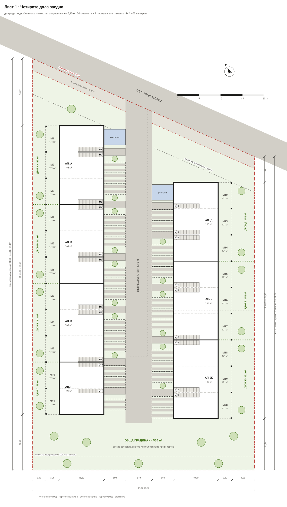

Вариант 1 · мезонети
Четирите УПИ заедно
- Жилища
- 27: 20 мезонета по 171 м² и 7 апартамента по 109–163 м²
- РЗП
- 4 507 м² · Кинт 1,15
- Сграда
- 2 реда по дълбочината, 20 оси по 6,05 м, 3 етажа
- Паркиране
- 30 места по вътрешна алея 6,10 м
Най-много площ. Проходът става обща алея, отзад остава обща градина. Изисква и четирите дяла да строят заедно.